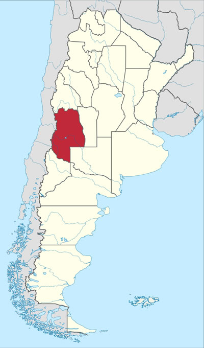
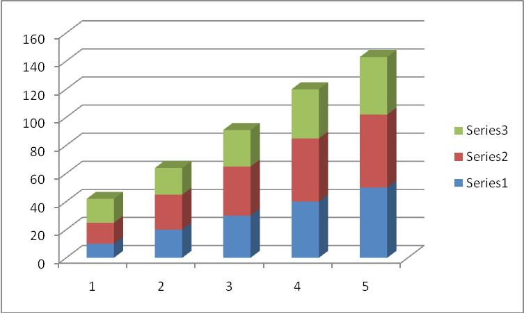

Mendoza the land of the good sun
The Province of Mendoza is located in the central west of the Argentine Republic, at the foot of Cerro Aconcagua, the highest peak in the Andes Mountains. Mendoza has been and is a Land of Opportunities.
Strategic location
Mendoza is located on the line of shortest distance between the oceanic coastlines that passes through the great southern capitals. A thousand kilometers separate it from Buenos Aires; four hundred from Santiago de Chile and three thousand two hundred from San Pablo.

Mendoza Urban Population
The City of Mendoza with its urban agglomeration, Greater Mendoza, is the fourth largest population unit in the country with almost 1,100,000 inhabitants and 848,660 inhabitants

Image Gallery

Mendoza is known for being a mountainous area

The General San Martín Park is the most important in the area. Recreational, sports, educational, cultural and tourist activities can be carried out.

The tunnel connects the Cacheuta area with the Poterillos Dam

The Cacheuta hot springs to relax and disconnect from the routine

Valle Grande San Rafael for adventure tourism such as rafting